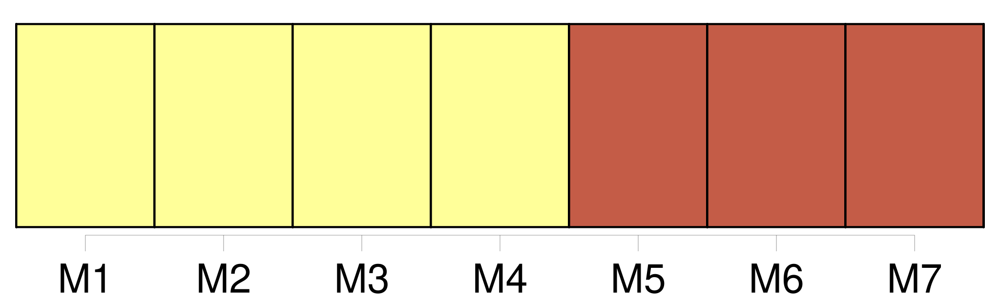
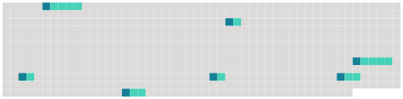

Longueur nb maillons : 7 mentions |
 |
», la section CFDT [du centre hospitalier de Bar-le-Duc] reproche à la direction de ne pas comprendre que le meilleur des investissement devant se faire en faveur du mieux-être du personnel. [4 phrases]
Selon des sources autorisées, il semble que dans les derniers mois de 2002, [l'hôpital] n'avait plus beaucoup de sous pour finir l'année budgétaire. [12 phrases] Ni les représentants du personnel, ni le comité technique d'établissement ( CTE ) n'ont été consultés, alors que les modalités de versement de la prime de service avaient été déterminés il y a quelques années au comité technique d'établissement en concertation avec les anciens directeurs [du centre hospitalier de Bar-le-Duc] [4 phrases]
Et de conclure : « Administrer et gérer [l'hôpital] , ce n'est pas seulement investir des millions d'euros dans la construction d'un bâtiment commercial et endetter très fortement [notre établissement] pendant de nombreuses années, au détriment probable des besoins actuels et futurs de [notre hôpital public] [2 phrases]
A l'heure où la pénurie des personnels de soins se fait sentir partout, cette direction n'a, semble-t'il, pas compris que le meilleur des « investissements », c'est d'abord « d'investir » pour que les agents de [notre hôpital public] se sentent bien, qu'ils aient des bonnes conditions de travail et de vie au travail et la rémunération en fait aussi partie ». |
 |
Il est possible de télécharger la ressource sur la page Ortolang |
Si vous avez des questions ou vous voyez des erreurs, merci d'envoyer un mail à silvia.federzoni89@gmail.com |